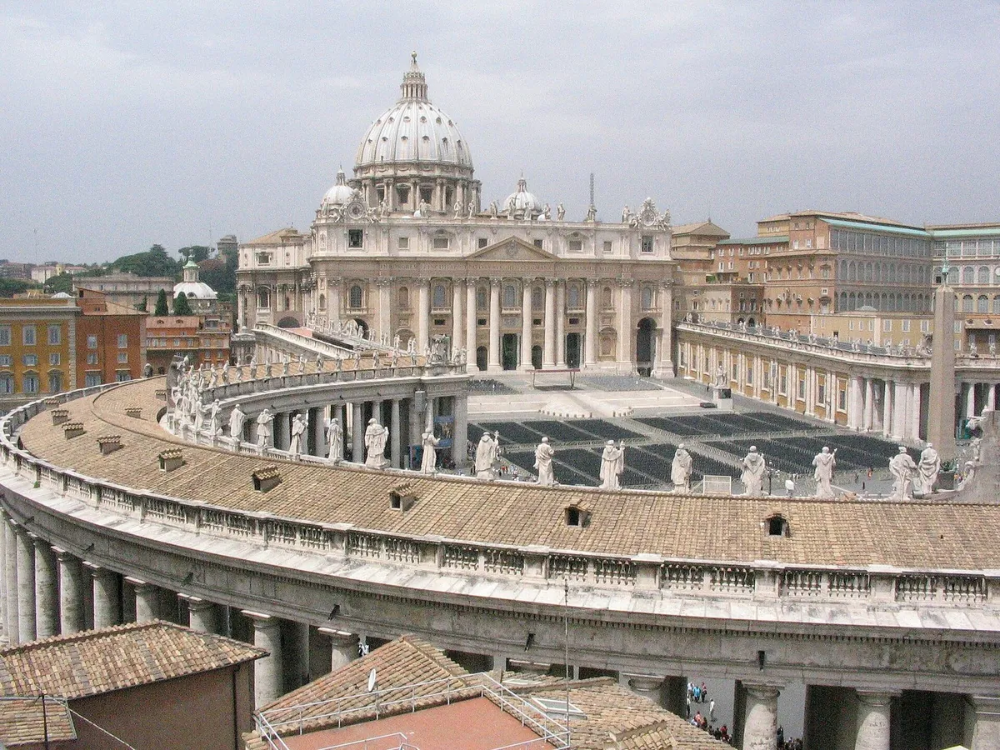
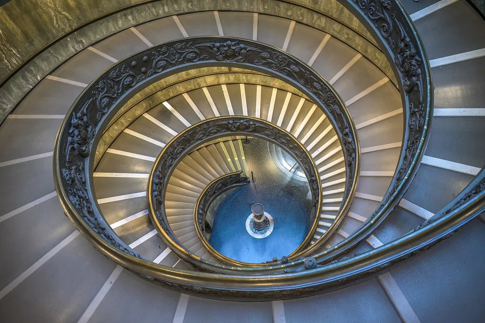
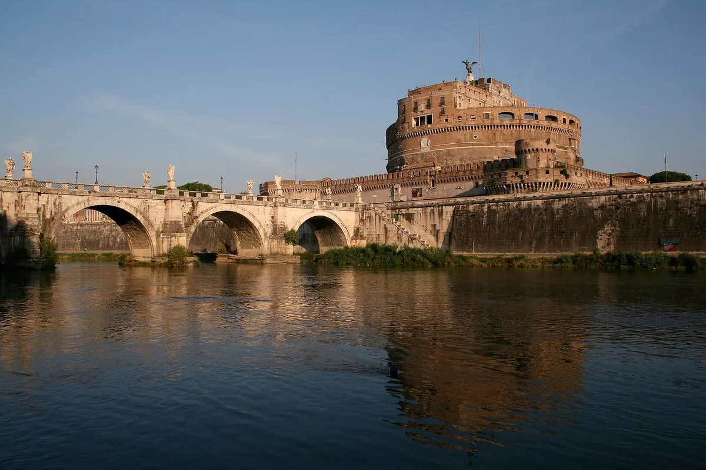

What to see near our homes
St Peter's, the Vatican Museums, Castel Sant’Angelo and Prati: places you can walk to straight from your front door, with practical tips for making the most of them.

St Peter's Basilica and Square
Bernini's colonnade, the basilica, Michelangelo's dome: the heart of the Vatican, a ten-minute walk from Via Ottaviano.

The Vatican Museums and the Sistine Chapel
Miles of collections, the Raphael Rooms and the Sistine Chapel: practical tips for a stress-free visit, just minutes from the Vatican Cozy Retreat.

Castel Sant'Angelo and the Borgo
From Hadrian's mausoleum to papal fortress: the most spectacular terrace over the Tiber and the streets of the Borgo, between the Vatican and the city centre.

Prati, Via Cola di Rienzo and the Trionfale Market
A late-19th-century district of tree-lined avenues: shopping on Via Cola di Rienzo, aperitivo hour, and the covered market where Romans do their food shopping.
Would you like an overview of the city's history before you go? Read our guide to the history of Rome.
Message us or call us
For bookings, information or special requests, you'll hear back from us personally. In Italian and in English.